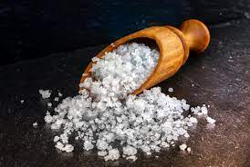

Pasta al Pomodoro
Descrizione
La pasta al pomodoro, è un primo piatto della cucina italiana, formato da pasta condita con salsa di pomodoro e foglie di basilico.
Ingredienti
Procedimento
- Cuoci la pasta al dente in acqua salata.
- Prepara un sugo al pomodoro.
- Aggiungi sale, pepe e basilico al sugo.
- Mescola la pasta cotta con il sugo.
Pasta
 >
>
La Pasta è un alimento a base di farina di diversa estrazione, tipico delle varie cucine regionali d'Italia.
Pomodoro
La salsa di Pomodoro è un alimento a base di pomodoro, tipico delle varie cucine regionali d'Italia.
Sale
>
Il sale da cucina è un ingrediente di cucina, costituito quasi completamente da cloruro di sodio.